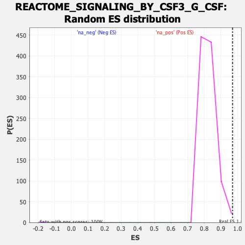

| | | Dataset | logarithmic_genelist.rnk |
| Phenotype | NoPhenotypeAvailable |
| Upregulated in class | na_pos |
| GeneSet | REACTOME_SIGNALING_BY_CSF3_G_CSF |
| Enrichment Score (ES) | 0.9699843 |
| Normalized Enrichment Score (NES) | 1.1723096 |
| Nominal p-value | 0.006006006 |
| FDR q-value | 0.16447496 |
| FWER p-Value | 0.885 |
Table: GSEA Results Summary
 Fig 1: Enrichment plot: REACTOME_SIGNALING_BY_CSF3_G_CSF
Fig 1: Enrichment plot: REACTOME_SIGNALING_BY_CSF3_G_CSF
Profile of the Running ES Score & Positions of GeneSet Members on the Rank Ordered List
| SYMBOL | RANK IN GENE LIST | RANK METRIC SCORE | RUNNING ES | CORE ENRICHMENT | | 1 | UBE2D1 | 30 | 40.723 | 0.5341 | Yes |
| 2 | TYK2 | 346 | 35.153 | 0.9700 | Yes |
| 3 | STAT1 | 2638 | 0.000 | 0.7707 | No |
| 4 | STAT3 | 2640 | 0.000 | 0.7706 | No |
| 5 | STAT5A | 2641 | 0.000 | 0.7706 | No |
| 6 | STAT5B | 2642 | 0.000 | 0.7706 | No |
| 7 | SYK | 2759 | 0.000 | 0.7605 | No |
| 8 | UBA52 | 3601 | 0.000 | 0.6873 | No |
| 9 | UBB | 3612 | 0.000 | 0.6864 | No |
| 10 | UBC | 3613 | 0.000 | 0.6864 | No |
| 11 | UBE2D2 | 3618 | 0.000 | 0.6861 | No |
| 12 | UBE2D3 | 3619 | 0.000 | 0.6861 | No |
| 13 | CUL5 | 5315 | 0.000 | 0.5386 | No |
| 14 | GRB2 | 6832 | 0.000 | 0.4067 | No |
| 15 | JAK1 | 7446 | 0.000 | 0.3534 | No |
| 16 | JAK2 | 7447 | 0.000 | 0.3534 | No |
| 17 | KRAS | 7687 | 0.000 | 0.3326 | No |
| 18 | LYN | 8185 | 0.000 | 0.2894 | No |
| 19 | PTPN11 | 10213 | 0.000 | 0.1130 | No |
| 20 | RNF7 | 10627 | 0.000 | 0.0771 | No |
| 21 | RPS27A | 10733 | 0.000 | 0.0679 | No |
| 22 | SHC1 | 11104 | 0.000 | 0.0358 | No |
| 23 | SOCS1 | 11490 | 0.000 | 0.0023 | No |
| 24 | SOCS3 | 11491 | 0.000 | 0.0023 | No |
Table: GSEA details [plain text format]

Fig 2: REACTOME_SIGNALING_BY_CSF3_G_CSF: Random ES distribution
Gene set null distribution of ES for REACTOME_SIGNALING_BY_CSF3_G_CSF